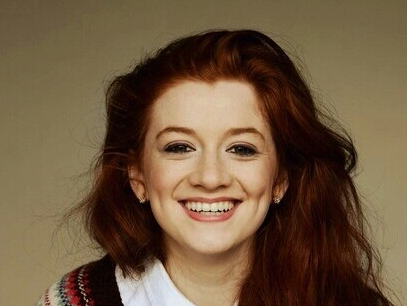

Molly Melena WeasleyAbout:1. Molly Melena Weasley was born to Percival Ignatius Weasley and Audrey Abigil Anderson on October 17 2003. 2. Her only sibling is Lucy Audrey Weasley. 3. She was sorted into Ravenclaw house when she first went to Hogwarts School of Witchcraft and Wizardry in 2014, at the age of 11. 4. Her godparents are Ronald Billius Weasley and Hermione Jean Granger. 5. She is a Half blood witch. 6. She was appointed as Prefect in her 5th year and was appointed Head Girl in her 7th year, she was not appointed as Quidditch Captain. Characteristics: 1. Wise 2. Creative 3. Curious Possesions: 1. A locket with her and her sister's photo inside 2. Her endless Diary 3. A 10½", Walnut Wood, Dragon Heartstring Core Wand 4. Transylvanian Barb (broomstick) Other Details: Eye Colour - Brown Hair Colour - Redish brown Height - 146cm (1st year) Height - 175cm (7th year) Species - Human Gender - Female Patronus - Dolphin Boggart - Not Getting a Ministry job Favourite Colour - Magenta Nickname - Mols Speciality - Deciphering Later Life: Married To - Cedric Amos Diggory Kids - Amos Percival Cedric Diggory (June 27, 2030), Cho Sandra Molly Diggory (May 15, 2034) Professions - Personal Assistant of the Minister of Magic |
 |